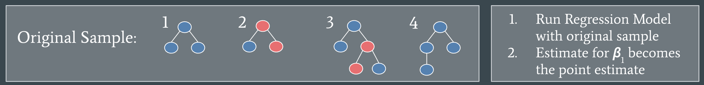

Blog
Welcome to my blog! Check in for posts about my projects, statistics, coding, and information about me and my interests. I hope reading some of my posts helps you get to know me better and you learn something cool about statistics and data analysis.
Pull Yourself up by Your (Block) Bootstraps
Hello,
Today’s post is about the concept of block bootstrapping and how I used it in my research project at UC Irvine last summer (2025). As a part of our final presentation at UCI, I taught the audience about this concept to explain my research findings.
Bootstrapping is a statistical method used to estimate the uncertainty of a desired statistic. It’s typically used when you don’t know the sampling distribution of the desired statistic or your data violates specific distribution assumptions, and therefore you cannot use traditional methods of uncertainty estimation that use theoretical sampling distributions.
Reminders before we get into the bootstrapping!
1) The true sampling distribution of a sample statistic would be found by repeating the experiment (e.g. taking a sample from the population) many times and recalculating the sample statistic each time. If you then plotted all the calculations of that sample statistic, you would see the sampling distribution.
The sampling distribution is the probability distribution for the sample statistic. Each possible value of the sample statistic has a certain probability of occurring, and when you put all those probabilities together, you get a probability distribution. When that probability distribution is for a sample statistic, we call it a sampling distribution.
In reality, we usually don’t know and can’t find the true sampling distribution of a statistic because it would be costly and timely to repeat the experiment many times. Instead, we use theoretical sampling distributions that are common probability distributions that each come with their own assumptions about the data. We choose the theoretical sampling distribution based on characteristics like sample size, underlying population distribution, and the statistic we are interested in calculating. For example, we can use the Central Limit Theorem to use the normal distribution as the sampling distribution for the sample mean when we have a large enough sample.
2) We use sampling distributions to estimate the uncertainty of a sample statistic. We are using what we know about the probability of observing that specific sample statistic (we know this from the sampling distribution) to say how certain we are that this sample statistic represents the true value of the population statistic.
If our sample does not meet certain criteria or we don’t have enough information about the underlying population to use theoretical sampling distributions, we can simulate the sampling distribution. Enter bootstrapping.
Since we can’t take new samples of data from the population to get the real sampling distribution, in bootstrapping, we treat our original sample as the “population” and randomly re-sample (with replacement) our “population” many times. At each re-sample, we calculate our statistic of interest, and store that information. After repeating this process many times, we can use percentiles of all our calculated statistics to calculate confidence intervals, showing the uncertainty of our original point estimate.
Block-bootstrapping is a version of bootstrapping that is designed for dependent or highly correlated data. (This is what I used in my project!) The main difference from regular bootstrapping is that instead of re-sampling every individual data point, the data is grouped into clusters or blocks, and then blocks are chosen at random for each re-sample. There are many different methods for how to choose blocks or clusters of data, depending on the specifics of your data. This method is commonly used in time-series or spatial data, where there are groups of highly correlated or dependent data.
I used this method of block-bootstrapping in my research project at ISI-BUDS. Here’s a quick intro to my project and our dataset.
The goal of our project was to understand the recruitment networks of internally displaced sex workers in Ukraine. The data was collected by the Alliance for Public Health, an NGO in Ukraine, using recruitment driven sampling. Individuals in the population of interest are chosen by the NGO, they are called the ‘seed’, they take the survey, and are given a set number of ‘coupons’ to give to people they know who are also eligible for the survey. Those people come in and take the survey and they get coupons to give out, and so on. The resulting data is structured as trees, each tree starting with the seed. We could assume independence of the trees because seeds are selected to cover a diverse population, and to reach networks that won’t overlap. However, the data on individuals within the same tree is dependent data because an individual being in the study is dependent on them being recruited by a friend or coworker. This is an example of one of our data trees. Blue dots show local individuals, and red dots show internally displaced individuals.

The analysis we did on this individual-level data was to run binomial regressions to understand how the displacement status of the recruiter impacted the displacement status of the respondent. We needed to estimate the uncertainty of our regression coefficients, but could not use standard regression theory (theoretical sampling distributions) because standard theory assumes data is independent, and our data is dependent. Since we had independence of trees, and each tree was essentially a block of dependent data, we used block bootstrapping to estimate our uncertainty.
How I used Block Bootstrapping for this project:
First, we ran the regression on our original sample, aka our entire dataset of different trees, and recorded the regression coefficient, \(\beta_1\) as our point estimate.

Next, we re-sampled our original sample of trees. In the pictured example, we randomly select four numbers between 1 and 4 and take the data from the corresponding trees as our new sample, then run the regression on the new sample.
We repeat this process again,
Each time, we will have different trees included to run our regression model with. We repeated this process 500 times. It is common to take between 500 and 2000 bootstrap samples. Then we can use quantiles (AKA percentiles) to construct confidence intervals for our regression model coefficients. For a 95% confidence interval this would be the 2.5 percentile and the 97.5 percentile.
As seen in the visuals above, each tree varied in size and number of displaced people. This was important to our interpretation of our confidence intervals for a few reasons. First, since the trees varied in size, even though there were the same number of trees in each bootstrap sample, there was a different total number of nodes. Second, since there was large variation between trees and in the number of displaced people per tree, some bootstrap samples might have a lot of displaced, and some might have very very few. Our main variable of interest was the displacement status on an individual’s recruiter, so having a large variation in number of displaced people per sample greatly affected the uncertainty of coefficients of the regression model.
This project provided the opportunity for me to learn how different versions of traditional statistical methods, like block-bootstrapping, can be applied to nontraditional data. I hope this blog post helped you learn something new, and inspired you to innovate with your data analysis methods.
Thanks for reading!
Best, a certainly optimistic uncertainty estimator
Data Visualization
Lately, I’ve been trying to navigate through the differences in data science, data analytics, data engineering, and all the other options for careers generally dealing with data. Throughout all of the different roles and responsibilities, my favorite data skill has to be data visualization.
I’ve always been really interested in art, color theory, visual aesthetics, and general design. In high school I seriously explored studying graphic design in college, and as a little kid I wanted to animate movies, both very creative industries. Another two things I have always loved are puzzles and math. In college, I’ve really enjoyed my higher math and statistics classes and learning to code because it’s a bit of both puzzles and math. If you add art, design, math and coding all together, we get to data visualizations. It’s a perfect combination of many things I enjoy.
Another thing to know about me is that I am a helper by nature, which really is the nail in the coffin for my love of data visualizations. The whole point of creating good data visualizations is to help people understand complex information.
Now, keep in mind data visualizations can easily be skewed (stats pun unintended, but it made me laugh, so it stays) to make comparisons seem more drastic than they really are just by omitting zero in the y-axis. If it becomes overly visual and dynamic, it can distract from the content, or even worse just be confusing and hard to read. Use the wrong color combination and anyone who is color blind won’t be able to understand the visual. Needless to say, there are many ways data visualizations can go wrong and not serve their original purpose, which is to communicate important information in an easily digestible way.
I want to create relevant and engaging data visualizations, so that all people can continue to make their own well-informed decisions.
Cheers, a data viz enthusiast